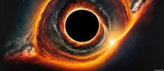

Los agujeros negros son regiones del espacio donde la gravedad es tan fuerte que nada, ni siquiera la luz, puede escapar de ellos. Son uno de los fenómenos más enigmáticos y fascinantes del universo.
Un agujero negro es una región del espacio-tiempo donde la gravedad es tan intensa que no permite que nada escape de su influencia. Se forman cuando una estrella masiva colapsa bajo su propia gravedad al final de su ciclo de vida.
Los agujeros negros se forman principalmente a partir del colapso gravitacional de estrellas masivas. Este proceso ocurre cuando una estrella ha agotado su combustible nuclear y no puede soportar su propia gravedad, colapsando en un punto de densidad infinita.
Existen varios tipos de agujeros negros, incluyendo:
Un documental que explora los secretos y misterios de los agujeros negros.
Un video que investiga lo que podría encontrarse dentro de un agujero negro.